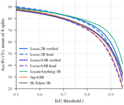
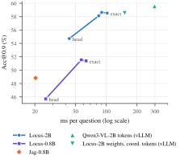
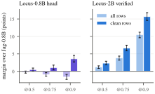
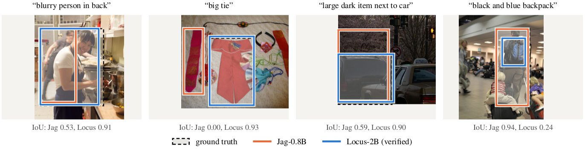
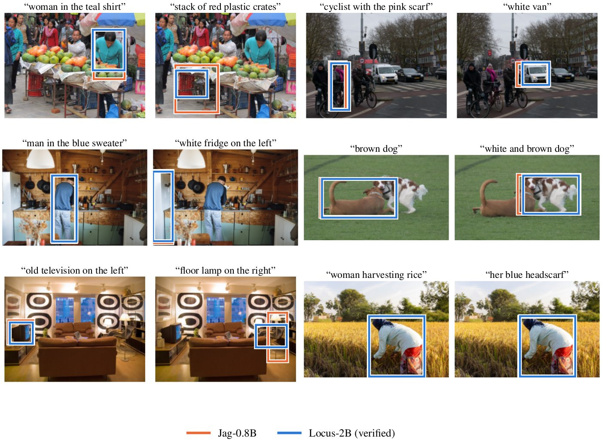

LOCUS
Locate Once, Check Until Settled
Draft-and-Verify Visual Grounding with a Box Head and Coordinate-Token Verification
Independent Researcher

Abstract
Vision-language models (VLMs) ground a referring expression in one of two ways. They decode the box as coordinate tokens, which is precise but takes one sequential step per token, or they regress it from a hidden state with a small head, which takes one step but loses accuracy at high IoU. The two fail differently: a head usually finds the right object but places its edges loosely, while coordinate tokens place edges precisely. We therefore use the regression head as a speculative drafter for the model's own coordinate tokens. LOCUS writes the head's box as coordinate tokens and checks them with the same backbone by Jacobi iteration over a shared image prefix. The fixed point is the model's greedy coordinate-token answer, reached in about 5.60 sequential passes on average instead of 18.46 decoding steps; head and verifier are one set of weights, trained jointly.
On the 8 RefCOCO, RefCOCO+ and RefCOCOg splits, verification raises LOCUS-2B's Acc@0.9 from 54.87 for its own head to 59.13, and the one-pass head is ahead at Acc@0.5 of every published model with at most 3B parameters except Florence-2-L. Against Jag, the strongest open regression-head model, at its own size and training budget, LOCUS ties at Acc@0.5 and, with typical acceptance, gains +4.52 points at Acc@0.9, with paired significance tests. Exact answers come 1.5× faster than vLLM greedy-decoding the same coordinate tokens with the same weights; a pure regression head remains faster still.
Method
Three parts share one image prefill. The image and a fixed prefix are encoded once and cached; each question then runs as a short branch that attends to the prefix and to itself, never to another branch.
![(a) Architecture: a frozen vision encoder and adapted merger feed a fine-tuned language model. A box branch ends in a [BOX] token read by an MLP box head; a verifier branch ends in coordinate tokens read by the LM head. A block attention mask lets each branch see the prefix and itself. (b) Inference: the draft box 434, 486, 801, 914 is written as tokens; pass 1 accepts the first token and corrects the second; after three passes the fixed point is 474, 488, 802, 910, the model's greedy answer with IoU 0.96.](static/img/overview.png)
1. Draft
Following Jag, a small MLP reads the final state of a learned [BOX] token and predicts the whole box plus an IoU-aware confidence in one pass.
2. Verify
The draft is rounded to the 0–1000 grid and tokenised exactly as the verifier would write it. Each Jacobi pass reads the argmax at every position in parallel, keeps the longest prefix that matches, and replaces the rest. Every pass extends the verified prefix by at least one token, so the fixed point is the model's greedy decode. In fp32 the verified box equals the greedy box on all 505 checked questions. Typical acceptance (α < 1) trades exactness for fewer passes.
3. Train once
Head and verifier are one set of weights, trained jointly on one image prefill per step. Two separately trained models are no more accurate and need two prefills. A dual mode keeps answers to any other question about the image exactly the base model's.
Results
| Model | Output | Acc@0.5 | Acc@0.75 | Acc@0.9 | Passes |
|---|---|---|---|---|---|
| Jag-0.8B | regression head | 88.16 | 76.51 | 48.76 | 1 |
| LocateAnything-3B | box tokens | 88.68 | 80.82 | 65.55 | – |
| Hi-Token-3B | digit tokens | 87.24 | 76.93 | 54.75 | – |
| LOCUS-0.8B | head | 87.97 | 75.58 | 47.03 | 1 |
| LOCUS-0.8B | verified, exact | 87.05 | 75.93 | 53.10 | 6.68 |
| LOCUS-0.8B | verified, α = 0.7 | 87.17 | 76.14 | 53.29 | 4.37 |
| LOCUS-2B | head | 90.01 | 79.79 | 54.87 | 1 |
| LOCUS-2B | verified, exact | 89.30 | 80.31 | 59.13 | 5.60 |
| LOCUS-2B | verified, α = 0.5 | 89.60 | 80.49 | 58.95 | 3.43 |
Verification adds most where a head is weakest: the gap between a head and its verified answer opens above IoU 0.8. LocateAnything-3B, larger and trained on far more grounding data, remains ahead at high IoU.

Latency
One RTX A6000, batch 1, 512² inputs, end to end from image file to parsed box, 256 RefCOCO testA questions. Jag, LOCUS and vLLM all use CUDA graphs and GPU preprocessing.
| System | Output | ms / question |
|---|---|---|
| Jag-0.8B | regression head | 20.3 |
| LOCUS-0.8B | head / exact | 25.5 / 63.5 |
| LOCUS-2B | head / α = 0.5 / exact | 43.5 / 84.3 / 102.2 |
| LOCUS-2B weights in vLLM | same coordinate tokens | 151.6 |
| Qwen3-VL-2B in vLLM | full JSON answer | 297.2 |

Evaluation on clean rows
The RefCOCO-family splits are drawn per dataset, so 46.9% of evaluation rows ask about an object that is in another dataset's training split. LOCUS trains on no evaluation image, and every comparison is repeated on the clean rows no model has seen. There, every margin over Jag-0.8B grows, and the equal-budget LOCUS-0.8B head moves ahead at Acc@0.5.

Examples


Limitations
- Slower than a pure regression head with equal engineering; verification adds passes in proportion to how often the draft is wrong.
- At 0.8B, exact verification lowers Acc@0.5 relative to the head; the benefit at that size is high-IoU accuracy.
- Trained on the RefCOCO family only. On Ref-L4's Objects365 images, whose targets are much smaller, LOCUS and Jag both fall far below the zero-shot base model.
- In bf16, “exact” holds up to the same rounding that already makes greedy decoding irreproducible across batch shapes.
- Released backbones stop at 2B.
BibTeX
@misc{talha2026locus,
title = {{LOCUS}: Locate Once, Check Until Settled. Draft-and-Verify Visual Grounding
with a Box Head and Coordinate-Token Verification},
author = {Talha, Muhammad},
year = {2026},
url = {https://muhammad-talha-ad.github.io/LOCUS/}
}